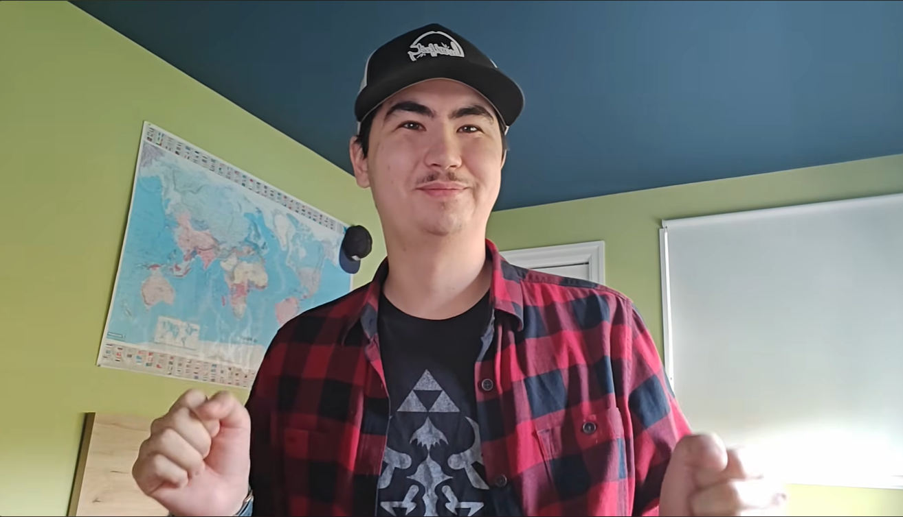

Dans mes projets Web, j’aime adapter les sites à différentes thématiques et créer des maquettes. J’apprécie aussi intégrer différents médias comme la vidéo et la musique pour rendre un site plus vivant et intéressant.
Après plusieurs changements de programme pour connaître mes options, je suis rentré en technique d’intégration en multimédia où j’ai trouvé ma place.
Cartes à collectionner
Pokémon
Trames sonores
Jeux vidéo
Organisation
Écoute active
Esprit d'équipe
Empathique

Comme je suis finissant en Techniques d’intégration en multimédia, je souhaite continuer à développer mes connaissances et mes compétences dans le monde professionnel. Mon objectif est de pouvoir m’adapter à différents environnements, notamment dans des agences marketing ou des agences 360.